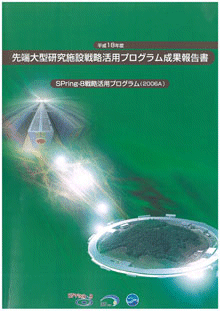
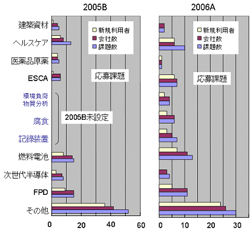
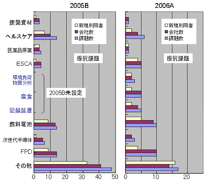
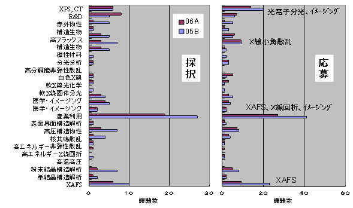
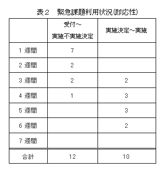
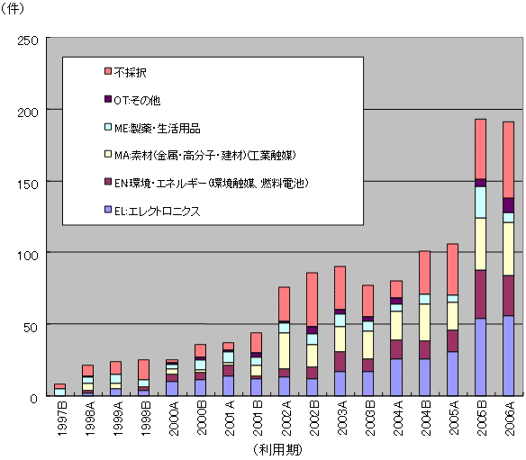

1. 概要2. 公募の内容
3. 成果公開の考え方
4. 実施の経緯
5. 結果
6. 施策の波及効果
7. 課題利用報告書
* 送付を希望される方は、連絡先（氏名、所属、〒住所、E-mail）をご記入の上、 事務局 support@spring8.or.jp までE-mailでご連絡ください。
大型放射光施設SPring-8では、昨年（平成17年度）より、（財）高輝度光科学研究センター（JASRI）において、
我が国が有する最先端の大型研究施設について、その汎用性にふさわしい広範な利用者・領域により、
施設の能力を最大限に引き出すような質の高い研究開発を実施し、新技術・新産業を創出していくために、
戦略的な活用を推進する事を目的にして、先端大型研究施設戦略活用プログラムを実施している。
昨年と同様、平成18年度も「SPring-8」と「地球シミュレータ」を活用するプログラムで、
これらの施設については新規利用者・新領域の拡大が必要で、
とりわけ産業界の利用者拡大を進めることが緊急の課題と考えられるため、利用促進を図るものである。
- SPring-8戦略活用プログラム
世界最高性能の大型放射光施設「SPring-8」を利用して、 文部科学省が策定する戦略に沿った利用の拡大を図るプログラムである。 新たな利用者による利用を円滑化するために、研究を支援する研究技術員を配置するとともに、 利用者の研究計画に関する相談を受け、助言を行うコーディネーターを配置する。 - 地球シミュレータ戦略活用プログラム
世界最高性能の超高速並列計算機システム「地球シミュレータ」を利用して、 文部科学省が策定する戦略に沿った利用の拡大を図るプログラムである。新たな利用者による利用を円滑化するために、 地球シミュレータの利用を技術的に支援するシミュレーション技術支援要員を配置する。 - SPring-8及び地球シミュレータ戦略活用プログラム
SPring-8と地球シミュレータの両方を利用することにより、 創造的な研究開発の推進や高度な研究成果を目指すプログラムである。
平成18年上半期では80課題程度の採択を予定した。
このうち、産業界による利用課題を9割程度、大学・公的研究機関による利用課題を１割程度、採択する予定である。
本プログラムで募集する課題は「新規利用者による研究」、「新領域研究」と 「重点領域研究」に大別され、
「新規利用者による研究」、「新領域研究」、「重点領域研究」の順に、より高い優先度を置いている。
「新規利用者による研究」とは、これまでSPring-8を利用したことのない利用者、
所属企業による研究を指している（但し、事業規模が相当程度大きく事業範囲が多岐に及ぶ企業で、
これらの企業関係利用者を一律に取り扱うことに支障がある場合は、既利用企業からの利用も認める）。
「新領域研究」とは、これまでSPring-8で実施されたことがない領域の研究、
又は近年開発された新手法を用いることによって可能になった新しい段階の研究を指している
（例：コンクリート等建築資材関連、ヘルスケア関連、医薬品原薬関連、
高エネルギーESCA（電子分光法）によるデバイス開発など）。
「重点領域研究」とは、経済社会的ニーズが極めて高く、
向こう10年間に我が国の国際競争力に大きな影響を与え得る分野で、国として重点的に進めるべき研究であり、
従来の利用研究課題とは領域やフェーズが異なり新規性をも有するものを指し、具体的には燃料電池、
次世代半導体、フラットパネルディスプレイ（以下「FPD」という。）の3領域を指している。
また、このプログラムの一環として、SPring-8の優れた分析装置としての性格を活用することを目的として、
即応性を必要とする課題について、「緊急実施型利用」を実施している。
本プログラムにおいてSPring-8を利用して得られた成果は、所定の利用報告書にまとめて提出される。 この利用報告書は公開とするが、他の一般課題等とは異なり、 利用者は利用報告書とともに「利用報告書公開日延期申請書」を提出することにより、 施設運用機関との協議を通じて、特許出願・特許取得等に必要な準備期間（2年間程度）として 利用報告書の公開日を延期することが出来るのが特徴である。
- 重点領域の指定
「重点領域推進委員会」にて、先端大型研究施設戦略活用プログラムを政策的に推進すべき分野として、 「重点産業利用」が領域指定された。SPring-8戦略活用プログラム課題は、領域指定型の重点研究課題（公募）として扱われる。 - 課題選定
採択課題の選定は、学識経験者、産業界等の有識者から構成される「SPring-8戦略活用プログラム課題選定委員会」 （以下「選定委員会」という。）により実施される。選定委員会は、申請者から提出された申請書類等の内容について、 文部科学省が設置する外部有識者から構成される「先端大型研究施設戦略活用プログラムに関する検討会」 （以下「検討会」という。）において示された方針に基づき、評価を行い、 本プログラムの趣旨に照らして優秀と認められる採択課題を選定する。
審査は非公開で行われるが、申請課題との利害関係者は当該課題の審査から排除される。 また、検討会および選定委員会の委員は、委員として取得した一切の情報を、 委員の職にある期間だけでなくその職を退いた後も第三者に漏洩しないこと、 情報を善良な管理者の注意義務をもって管理すること等の秘密保持を遵守することが義務付けられている。 - 審査の手順
審査は以下の手順により実施される。
- 形式審査
提出された申請書類について、応募の要件を満たしているかについて審査する。 なお、応募の要件を満たしていないものは、以降の審査の対象から除外される場合がある。 - 書類審査
選定委員会の下に設置する専門分野別の分科会（外部有識者で構成）により、書類審査を実施する。 - 最終審査
書類審査における評価を踏まえ、選定委員会において審査を実施し採択課題を決定する。
- 形式審査
- 審査の観点
審査（形式審査を除く）は以下の観点に重点を置いて実施される。- 科学技術における先端性を有すること
- 特許化、製品化等を通じて新技術、新産業創出に資すること
- 社会経済ニーズに合致すること
- 研究手段としてのSPring-8の必要性
- 実験内容の技術的な実施可能性
- 実験内容の安全性
- 利用者支援
コーディネーター、産業利用支援グループが主に中心となり、課題毎に担当者をおき、 BL担当者の協力の下、全所的に支援を実施した。支援の内容は、重点分野における実験環境の整備、 コーディネーター及びスタッフによる実験企画・準備、実験実施、実験解析に至る技術支援、 及び個々の実験に必要な経費などの財政支援からなる。 - 利用実験
利用実験期間の区切りは通常の年度分けとは少し異なるため、 本報告は平成18年上半期(2006A利用期：2006年3月～7月の期間）に実施された利用実験課題である。 - 報告
2007年9月頃にSPring-8産業利用報告会の開催に合わせて、 平成18年(2006A期，2006B期)の先端大型研究施設戦略活用プログラムの成果報告を実施する予定である。 その開催日程等についてはSPring-8ホームページ等に掲載予定である。
- 応募・採択結果
採択/応募総数：74課題/104課題
産業界：66課題/95課題 （採択率69％）（内）併用：1課題/1課題）
学・官：8課題/9課題 （採択率89％）（公的機関1課題を含む）
- 分類
表1 機関、領域別応募採択結果
注意）新規利用者と新領域・重点領域研究を各々別に分類しているため、重複している課題がある。分類 民間
採択数/応募数
（採択率）学官
採択数/応募数
（採択率）新規利用者（初回） 13/25（52％） 3/4（75％） 新規利用者（2回目） 26/35（74％） 0 新領域研究 26/38（68％） 2/2（100％） 重点領域研究 23/27（85％） 3/3（100％） その他 17/30（57％） 0 併用課題 併用課題 1/1 （100％） 0 0
産業界の新規利用者採択課題の割合(2回目を含む）：65％(39/60=0.65）
（2005B：59％(59/100=0.59）） - 産業界の新規利用者と企業数
採択された新規利用者（2回目を含む）：39課題/34社
（2005B：59課題/47社）
新規利用者（初回） ：13課題/13社
新規利用者（2回目）：26課題/21社
産業界全体
採択 66課題/48社
応募 95課題/64社
- 産業界の動向
- 新規利用者
今回初めての産業界の新規応募課題は1/4程度（25/95=0.26）である。 また、当該プログラムでは二回目まで新規利用者として優先的に採用する方針であり、 前回の新規利用者の半数以上（35/59=0.59）が続けて応募した。 本プログラム開始以前では新規参入が10社/半年程度で推移していた状況と比較して、 2005B期に引き続き高い水準を維持している。 産業界の新規参加を容易する施策がSPring-8への関心の高まりを旨く捉えたと考えている。 特に、コーディネーターによる課題解決型の相談対応、 コーディネーターと連携した技術支援スタッフの具体的な技術支援が新規利用者に大きな利便性を与えている。 - 新領域研究・重点領域研究
前回、当該施策で急増したヘルスケア関連は勢いを継続しているが、コンクリート等建築資材関連と医薬品原薬関連は少ない。 一方、今回例示を増やした耐腐食構造材関連と高密度記録装置関連は大体予想通りである。 重点領域研究では、燃料電池とフラットパネルディスプレーが多く、次世代半導体が少ない傾向が継続している（図1，図2）。 領域設定はかなり有効であったと思われる。具体的には、化粧品メーカーや日用品メーカーが新規に参入し、 新しい領域を形成しつつある。一方、燃料電池では、エレクトロニクス、化学系企業、 ガス供給企業など多業種にわたり多くの企業が参入している。 フラットパネルディスプレーでは部材供給の化学系企業の参入が顕著である。

図１ 領域別産業界応募課題
図２ 領域別産業界採択課題- 技術分野
高エネルギーESCA、XAFS、Ｘ線小角散乱に課題が集中し、 結果として特定ビームラインに課題が集中する傾向は変わらない（図3）。 集中する当該技術分野は、必然的に他に比べて倍率が高くなる。設備の増設およびスループットの向上が今後の課題である。
図３ ビームライン別産業界応募・採択課題
- 緊急実施型利用状況

現行の2回／年の利用のサイクルが長いため、産業界のニーズに合わないとの要望が産業界から強く出ていた。 そのため、前回と同様に、一部の利用枠を残して随時利用できる緊急実施型利用制度を設けて運用した。 受付は随時とし、当該施策に沿った基準に加えて、緊急性を重視し、（財）高輝度光科学研究センターが実施を判断した。
2006A利用期で実施した結果は、10社2機関から12課題の申し込みがあり、10課題(8社2機関)が実施された。 実施課題の内訳は、新規利用者・新規事業および新領域が5課題、重点領域が5課題、 その他2課題である(なお、新規・新領域と重点領域とは別々に分類しているため重複している課題もある)。 また、受付から実施決定までに要した期間は2005B期と同様に短期間であるが、 実施決定から実施までに要した期間は、依然として長く、１ヶ月半を要した課題もあった(表２)。
- 利用報告書の公開日延期
2006A利用期で実施した課題（緊急実施型利用を含む）について、 利用報告書公開日延期申請が出された。内訳は次の通りである。- 公開日延長許可：22件
理由内訳（複数回答有り）
- 知的財産権の取得のため：19課題
- 事業への適用のため：5件(内、3件は知的財産権取得も理由に挙げている)
- その他の理由：4課題 （*2009/10/21 1課題→4課題に訂正いたしました。）
- 公開日延長不許可：0件
施策の波及効果図４は、民間企業の実験責任者が共用課題に応募した 課題(不採択課題も含む)の分野別課題数を半期毎の推移で示したものである。 2005B利用期に始まる産業界の利用拡大を進めることを目的にした 先端大型研究施設戦略活用プログラムの実施に呼応して突出した課題数は、2006A利用期においても、 そのまま維持している。このグラフから明らかなように、産業利用拡大のためにビームタイムを確保し、 コーディネーターと支援要員を増員して、新規利用者に応える当該プログラムが時宜を得た有効な施策であることを示している。

図４ 民間企業における分野別の共用課題(不採択課題含)
課題利用報告書（この成果報告書に掲載される課題利用報告書は、2006A利用期に実施された課題（緊急実施型課題利用を含む）のうち、 利用報告書公開日延期申請許可となったものは除いている。 また、緊急実施型利用を行ったものについては、タイトル末尾に（※）を記述している）
- 技術分野
- 新規利用者